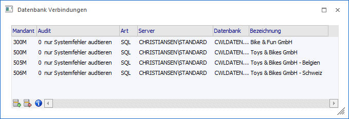
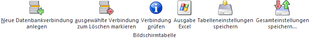
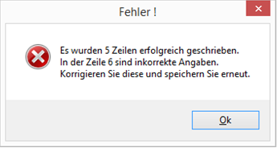
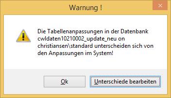

1 Datei
1 Datenbank Verbindungen
… können Eintragungen für den Aufruf von Mandanten geändert, hinzugefügt oder entfernt werden. Die Eintragungen sind notwendig, damit das Programm auf alle Mandanten, die bearbeitet werden sollen, zugreifen kann. Die Liste aller in diesem Programmpunkt eingetragenen Mandanten ist auch im Programm WinLine START beim Mandantenwechsel sichtbar. Jeder Eintrag beinhaltet die eindeutige Zuordnung zu einem Mandanten. Dadurch weiß das Programm, auf welche Datenbank es zugreifen soll und wo sich die Datenbank befindet.
Achtung
Wenn hier falsche Eintragungen vorgenommen werden, kann das Programm nicht mehr auf den Mandanten zugreifen.

Ø Mandant
Eingabe der Mandantennummer für die eindeutige Zuordnung. Jede Mandantennummer (4stellig) darf nur einmal verwendet werden. Wird eine Mandantennummer ein zweites Mal verwendet, wird der bestehende Eintrag überschrieben.
Ø Auditstufe
Unter "Audit" versteht man das Mitschreiben von Ereignissen im Programm. Dadurch lassen sich Vorgänge bzw. Programmaufrufe nachvollziehen. Durch die Auditstufe wird festgelegt, im welchem Umfang Ereignisse mitgeschrieben werden sollen.
ü 0 - kein Audit
Es werden nur
die wichtigsten Ereignisse protokolliert. Dazu gehören Programmaufrufe (Logins -
ein Anwender ruft das Programm auf und arbeitet damit), das Beenden des
Programms und Systemfehler (das Programm kann z.B. nicht zur Datenbank verbinden
etc.).
ü 1 - keine Fensterwechsel
Es
werden alle Vorgänge protokolliert. Davon ausgenommen sind die sogenannten
"Fensterwechsel". Unter Fensterwechsel versteht man den Aufruf einen
Menüpunktes. Dadurch wird ein Fenster geöffnet, mit dem dann der entsprechende
Vorgang durchgeführt wird.
ü 9 - alles
Es werden alle
Vorgänge protokolliert.
Hinweis
Die Auswertung des Auditprotokolls erfolgt im Programm WinLine START im Menüpunkt "Optionen" - "Auditprotokoll" - "Funktionen".
ü I - Inaktiv
Mit dieser Option
wird die Datenbankverbindung deaktiviert. D.h. sie ist zwar in den
Datenbankverbindungen vorhanden, der Mandant selbst ist aber nirgends im
Zugriff.
Achtung
Je höher die Auditstufe gestellt wird, desto mehr Datensätze müssen gespeichert werden. Daher empfiehlt es sich, dass Auditprotokoll regelmäßig auszudrucken und danach zu löschen (im Programm WinLine START im Menüpunkt "Optionen" - "Auditprotokoll" - "Funktionen").
Ø Art
Hier kann entschieden werden, auf welche Art auf die Daten zugegriffen werden soll. Voraussetzung dafür ist, dass die entsprechenden Treiber ordnungsgemäß installiert wurden (nähere Informationen entnehmen Sie bitte dem "Installationshandbuch"). Dabei stehen folgende Optionen zur Verfügung:
ü SQL - Microsoft SQL-Server oder MSDE/Express Edition
ü POS - PosgreSQL (wird nicht mehr unterstützt!)
Ø Server
Hier muss der Name des Computers eingegeben werden, auf dem der SQL-Server installiert ist (z.B. SQL-Server). Durch Drücken der F9-Taste werden alle SQL-Server angezeigt, die im Netzwerk vorhanden sind.
Ø Datenbank
In diesem Feld muss die Datenbank eingetragen werden, in der sich der Mandant befindet.
Hinweis
Durch Drücken der F9-Taste werden alle vorhandenen Datenbanken angezeigt, die am ausgewählten SQL-Server vorhanden sind.
Ø Bezeichnung
Eingabe eines Beschreibungstextes für den Mandanten. Diese Beschreibung wird beim Programmeinstieg beim Mandantenwechsel auch vorgeschlagen.
Tabellenbuttons

Ø Neue Datenbankverbindung anlegen
Durch Anklicken des Buttons können neue Einträge hinzugefügt werden. Neue Einträge werden in einer anderen Schriftart dargestellt und werden erst nach dem Drücken des "Ok"-Buttons oder der Taste F5 wirksam.
Ø ausgewählte Datenbankverbindung zum Löschen markieren
Durch Anklicken des Buttons können bestehende Einträge gelöscht werden. Gelöschte Einträge werden grün dargestellt und werden erst nach Drücken des "Ok"-Buttons oder der Taste F5 wirksam.
Ø Verbindung prüfen
Durch Anwahl dieses Buttons werden die Tabellenanpassungen zwischen Mandantendatenbank und Systemdatenbank verglichen. Sollten hierbei unterschiede erkannt werden, so wird dieses am Bildschirm ausgewiesen.
Hinweis
Bei der Meldung wird neben "Ok" auch der Button "Unterschiede bearbeiten" angeboten. Durch Anwahl des Buttons wird das Programm "Benutzerdefinierte Tabellen abgleichen" gestartet.
Ø Ausgabe Excel
Durch Anwahl des Buttons "Ausgabe Excel" wird der Inhalt der Tabelle nach Microsoft Excel übergeben.
Ø Tabelleneinstellungen speichern
Die Spalten einer Tabelle können grundsätzlich an beliebige Positionen verschoben, bzw. in der Breite entsprechend angepasst werden. Durch Anwahl des Buttons "Tabelleneinstellungen speichern" werden die Einstellungen benutzerspezifisch gespeichert und bei dem nächsten Aufruf des Programmpunktes wieder vorgeschlagen.
Ø Gesamteinstellungen speichern
Im Gegensatz zu "Tabelleneinstellungen speichern" können mit "Gesamteinstellungen speichern" mehrere Tabellenaufbauten gespeichert und nach Wunsch geladen werden. Zusätzlich werden Sonderfunktionen der Tabelle (z.B. "Spalte gruppieren") ebenfalls bei der Speicherung bedacht.
Buttons
Ø Ok
Durch Drücken des Buttons "Ok" oder der Taste F5 werden die Änderungen gespeichert.
Hinweis
Alle gespeicherten Änderungen werden erst nach einem Programmneustart (WinLine START) wirksam.
Hinweis
In Verbindung mit dem Rücksichern eines Mandanten mit abweichenden Tabellenanpassungen kann der Mandant in den Datenbankverbindungen vorerst nur eingetragen werden. Bei der Speicherung erscheint folgende Meldung:

Mit einem Doppelklick auf den Mandantennamen bzw. Anwahl des Tabellenbuttons "Verbindung prüfen" wird anschließend eine Prüfung gestartet. Werden hierbei Unterschiede bezüglich der Tabellenanpassungen erkannt, so wird diese am Bildschirm ausgewiesen und mit Hilfe des Buttons "Unterschiede bearbeiten" kann das Programm "Benutzerdefinierte Tabellen abgleichen" gestartet werden.

Ø Ende
Durch Anwahl des Buttons "Ende" wird das Fenster geschlossen und alle getätigten Änderungen verworfen.
Ø Änderungen verwerfen
Durch Anklicken des "Änderungen verwerfen"-Buttons werden alle getätigten Änderungen wieder zurückgesetzt (das Fenster "Datenbank Verbindungen" bleibt dabei geöffnet).